ハヤトにできること
スマホでも PC でも使えます。ふだんの言葉で話しかけてください。
1はじめての登録
最初の1回だけ。登録したあと、管理者が承認すると使えるようになります。
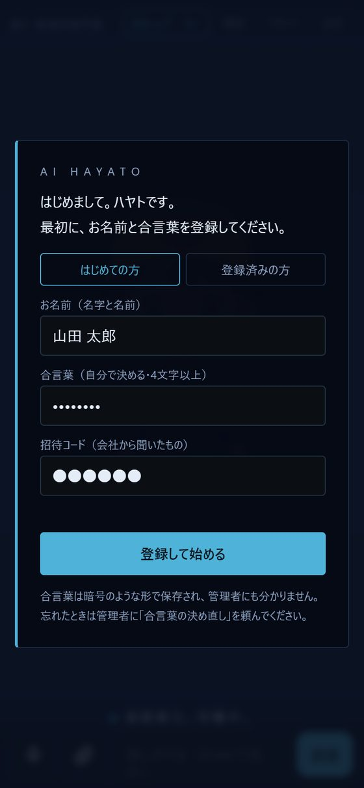
- 上の URL をスマホ（または PC）で開きます。ホーム画面に追加しておくと便利です。
- 「はじめての方」で、次の3つを入れます。
お名前 名字と名前（例：山田 太郎）。同じ名字の人がいるので、必ず両方 合言葉 自分で決める。4文字以上。管理者にも分からない形で保存されます 招待コード 会社から聞いたもの - 「登録して始める」を押します。
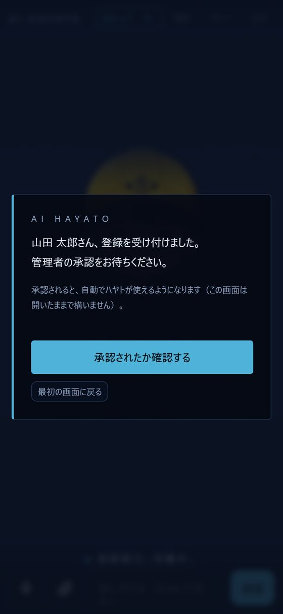
- 「承認をお待ちください」と出たら、管理者の承認を待ちます。
- 承認されると、画面が自動で切り替わります（30秒ごとに確かめています）。すぐ確かめたいときは「承認されたか確認する」。
2話しかけ方
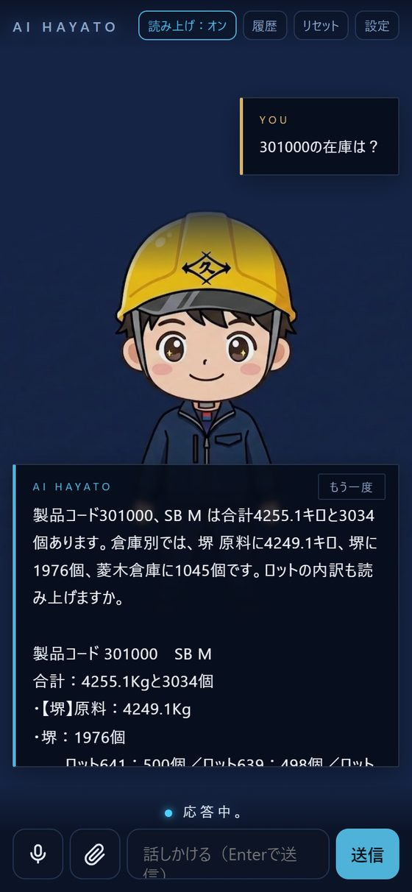
- マイク🎤を押して話す（話し終わると自動で送られます）か、下の欄に文字で入れて「送信」。
- ハヤトが声と文字で答えます。文字はできたそばから出て、声はそのあと続きます。
| 読み上げ：オン／オフ | 声で答えるかどうか（静かな場所ではオフ） |
|---|---|
| もう一度 | 返事を聞き逃したとき、もう一度読み上げます。「もう一回」と話しかけても同じです |
| リセット | 話の流れをいったん忘れて、新しい話を始めます |
3在庫を調べる
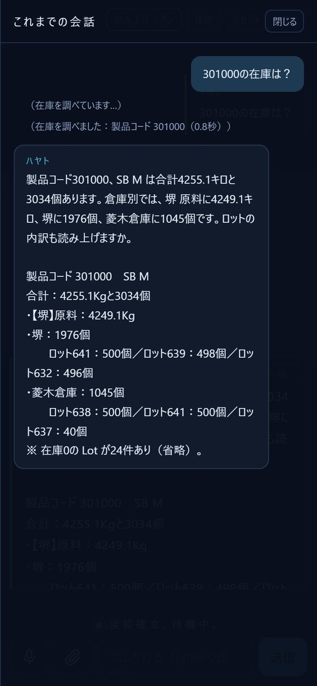
ZAICO の最新の在庫を調べます（見るだけで、在庫を変えることはしません）。
301000 の在庫は？ → 合計と倉庫ごとの数
菱木倉庫の 301000 は？ → その倉庫だけ
ロットの内訳も教えて → ロットごとの数
SB M の在庫は？ → 製品コードが分からないときは物品名で
4資料を見る・資料について聞く
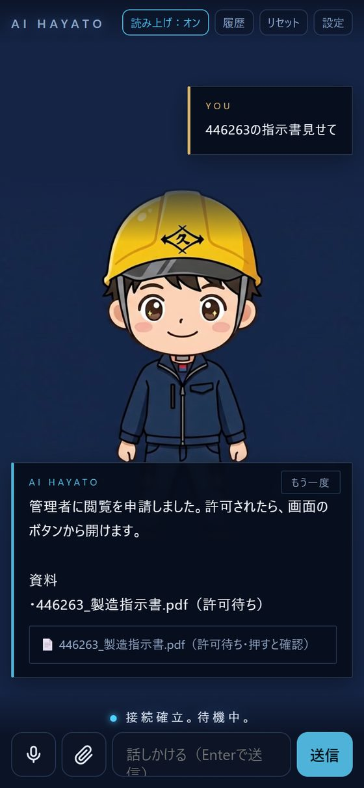
資料そのものを見る
446263 の指示書見せて 11月の 446263 の指示書見せて
- ハヤトが資料を探して、画面に「📄 〇〇 開く」ボタンを出します。
- 会社資料は機密のため、管理者の許可が要ります。ハヤトが自動で閲覧の申請をします（ボタンに「許可待ち」）。
- 管理者が許可すると、24時間開けます。ボタンを押すと資料が表示されます。
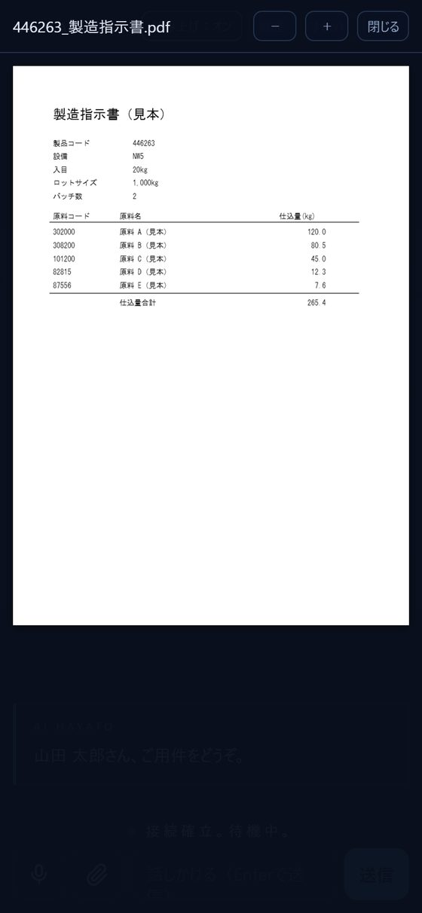
資料の中身を聞く
446263 の使用原料を教えて フォークリフトの点検の手順は？
ハヤトが資料を読んで答えます。読んだ資料の名前と、まとめた内容が画面に出ます。資料を読むときは15秒前後かかります。
5資料を送る・間違いを探してもらう（精査）
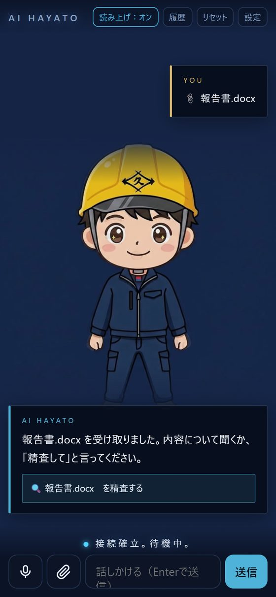
- 入力欄の左の📎を押し、ファイルを選びます（PDF・Word・Excel・写真など。複数選べます）。
PC ではフォルダーごと送ることもできます。 - 送った資料は自分専用の資料フォルダに入り、あとから「〇〇について教えて」と聞けます。ほかの人には見えません。
- 「🔍 〇〇 を精査する」を押すか、これを精査してと言うと、ハヤトが間違いを探します。
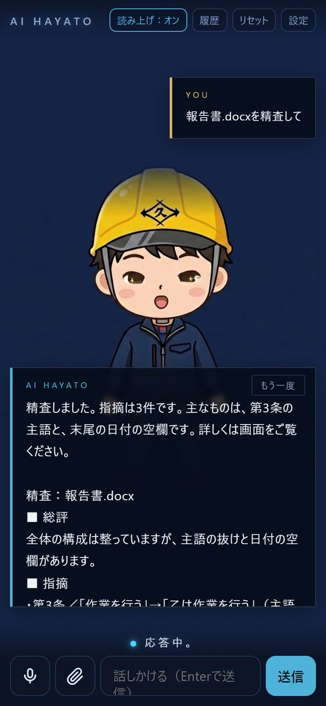
誤字脱字・言い回し・敬語・前後の矛盾・数字や日付の食い違い・抜けている項目（日付・宛先など）を指摘します。
敬語を中心に見て 数字の計算を確かめて のように、見てほしい点も伝えられます。
6「メモして」── 自分専用の答え方を覚えさせる（ハヤト手帳）
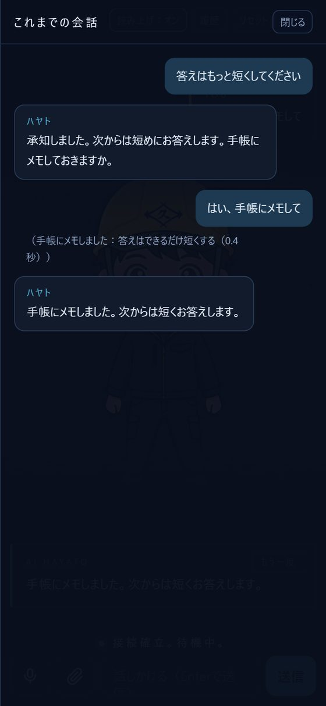
答え方の好みを伝えて「手帳にメモして」と付けると、ハヤトがあなた専用の手帳に書き込み、次からずっとそのとおりに答えます。
| 言い方の例 | どうなるか |
|---|---|
| 在庫を聞いたら、堺 原料だけ答えて。手帳にメモして | ふだんは堺 原料だけ答える（「全倉庫で」と言えば全部） |
| 答えはもっと短くして。手帳にメモして | 次から短く答える |
| 数字は単位まで言って。手帳にメモして | 個・キロなどを必ず添える |
手帳の内容を消したり直したりしたいときは、管理者に頼んでください。
7会社の決まりを提案する
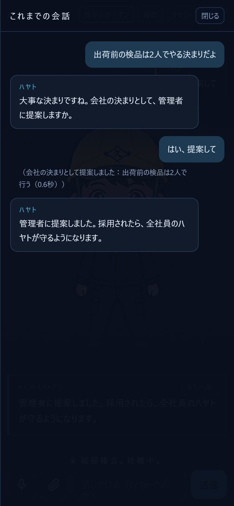
皆が守ったほうがよい仕事の決まりを教えると、ハヤトが「会社の決まりとして管理者に提案しますか」と聞きます。
- 例：出荷前の検品は2人でやる決まりだよ
- 「はい、提案して」→ 管理者に届きます。
- 管理者が採用すると、全員のハヤトがその決まりを守るようになります（10分ほどで反映）。
8今日の予定・朝礼の内容
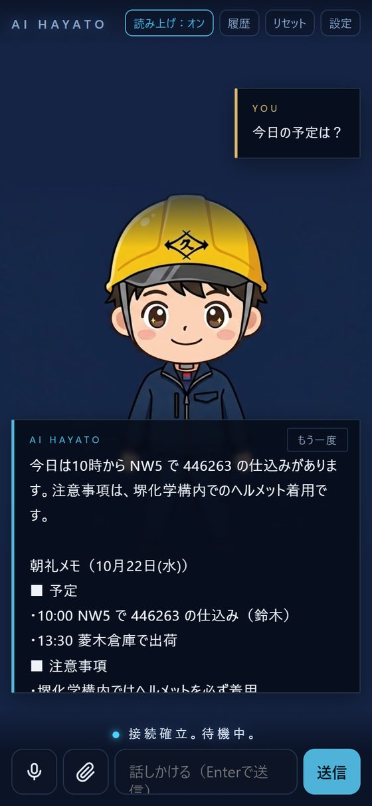
毎朝の朝礼は、ハヤトが聞き取って朝礼メモ（予定・注意事項）に残しています。朝礼に出られなかった人も、あとで確かめられます。
今日の予定は？ 今日の注意事項は？ 昨日の朝礼の内容は？
8+皆に連絡する
ハヤトに頼むと、Google Chat の「AIハヤトからのお知らせ」スペースに、「〇〇さんからの連絡」として皆に送ります。
- 皆に、今日15時から倉庫の棚卸しをすると連絡して
- ハヤトが文面を整えて「この内容で皆に送りますか」と聞きます。
- よければはい、送って。直したいときは「時間を16時に直して」のように伝えます。
9号機のカメラを見る
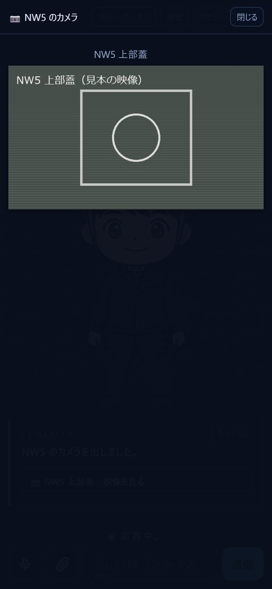
NW5 のカメラ見せて NW4 の様子を見せて
Wチェックシステムのカメラの映像が画面に出ます。「閉じる」で終わります。
https://192.168.1.240:5051 を開き「詳細設定 → アクセスする」を押してください（映らないときの画面にも案内が出ます）。10履歴と設定
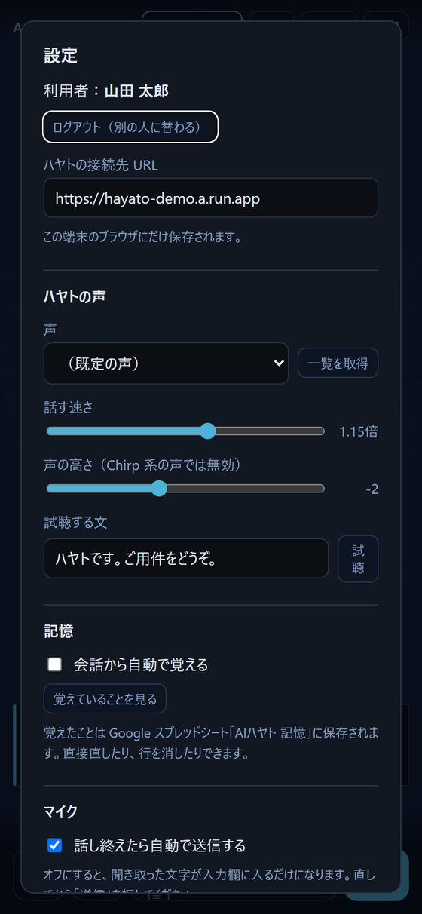
| 履歴 | これまでの会話と、ハヤトが何を調べたか（「在庫を調べました」など）が見られます |
|---|---|
| 声 | 声の種類・話す速さを変えられます。「試聴」で確かめてから「保存」 |
| 記憶 | 「会話から自動で覚える」のオン／オフ。「覚えていることを見る」で一覧 |
| マイク | 話し終わったら自動で送るかどうか |
| ログアウト | ほかの人がその端末を使うとき |
11朝礼で使う（進行役・管理者向け）
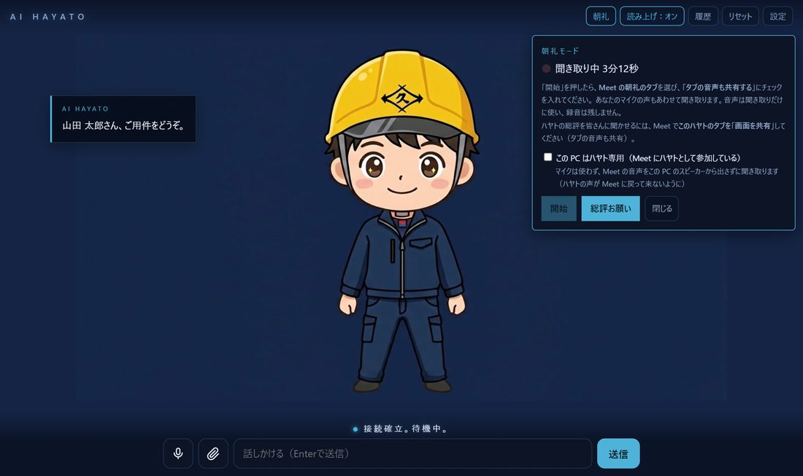
- PC でハヤトの画面を開き、右上の「朝礼」→「開始」→ Meet の朝礼のタブを選び「タブの音声も共有する」をオン。
- Meet で「画面を共有」→ ハヤトのタブ（タブの音声も共有）。皆にハヤトが映り、声も届きます。
- 朝礼の最後に「総評お願い」。ハヤトが朝礼のまとめ・安全の注意・前向きな一言を約2分話し、予定と注意事項を朝礼メモと Chat に残します。
困ったとき
| 声が出ない | 「読み上げ：オン」か、スマホの音量・マナーモードを確かめる。「もう一度」を押す |
|---|---|
| 「通信に失敗しました」 | 電波を確かめて、もう一度送る。朝いちばんの1回目は少し時間がかかることがあります |
| 答えがおかしい | 製品コードや言い方を変えて聞き直す。「リセット」で話の流れを切ってから聞くのも効きます |
| 合言葉を忘れた | 管理者に「合言葉の決め直し」を頼む → 同じ名前・新しい合言葉・招待コードで登録し直す |
| 資料が開けない | 会社資料は管理者の許可が必要（許可から24時間）。期限が切れたら、もう一度「見せて」 |
| カメラが映らない | 社内の Wi-Fi か確かめる。9. カメラの「初めての端末では」を行う |